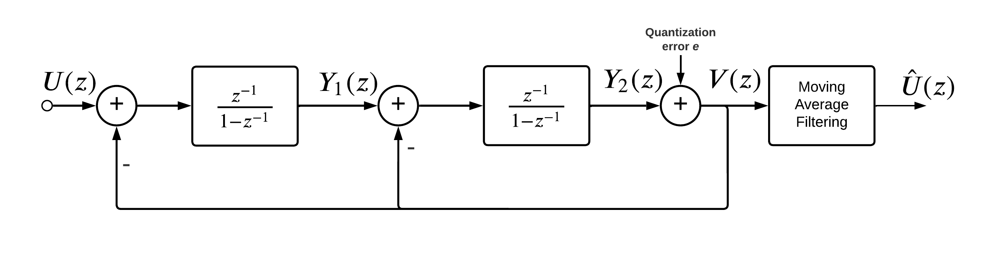

flowchart LR A[Anti-Alias Filtering] --> B[Sampling] B --> C[Quantization] C --> D[Digital Filtering]
Design of an Analog-Digital-Converter the Delta-Sigma way
1 VERY IMPORTANT, PLEASE READ
To get the quarto output to behave properly, some steps have to be taken.
When parsing data from .raw files, the toolbox will throw a warning. To prevent this, right click on “l.parse()” -> “Go to definition”. There, you comment out line 197 and the warning is gone.
Whenever referencing to a figure, some data file, etc. and you compile the whole document (“report_grp4.qmd”) the paths specified have to be relative to the main document, otherwise quarto won’t find the specified file
If you need help with importing .raw files using python, please look at my version in chapters/clock_gen/clock_gen.qmd
2 Introduction
Since more and more manufacturers are ending their production of integrated circuit solutions, the development of full custom solutions is becomming more attractive. Thus, the different subgroups of the course “Concept Engineering Mixed-Technology Systems”, held by Professor Meiners at Hochschule Bremen, are tasked with the development of an Analog-Digital-Converter, roughly modeled in a way to replace the ADS1115 by Texas Instruments within a specified measurement system-chain.
In the following we present our approach to designing said ADC. This includes a theoretical analysis of the workings of \(\Sigma \Delta\) ADC’s, an exploration of it’s basic behavioural characteristics via system analysis, deriving basic and idealized circuits to match the behaviour, and lastly a detailed step-by-step design using SPICE simulations within the xschem design environment, where solutions on IC-level will be proposed.
2.1 Top-Level Overview of Considered System
The considered system of interest for this semester is a classical meassurement system, consisting of an accelerometer as our analog data source, an ADC to convert said analog data to the digital domain, which can then be handled by a microcontroller as our processing unit.
The specific board-level components that are considered for this signal-chain are the ADXL335 accelerometer, the ADS1115 ADC and an ESP8266 microcontroller.

The mentioned ICs are given as evaluation- & breakout boards as part of the lab inventory.


2.2 General Overview of given ADC
Figure Figure 5 shows a more detailed block diagram of the ADS1115. The focus of our work lies on the components in the orange box. The theory for the digital filter stage following the modulator is also explored. The modulator itself comprises the switched capacitance to sample the input signal, an integrator and the comparator to output a PWM signal. The other blocks depicted are considered auxillary block. These include the multiplexer which can be used to switch between different inputs. It is followed by a programmable gain amplifier. The amplification factor can be selected via an I2C interface which is also used to select the input channel, sample rate, as well as for the read out of the converted digital data among others. Since these auxillary blocks do not add to the functionality of the modulator itself it was decided to not explore them any further. In case of the reference oscillator and the voltage reference, these are modeled as ideal inputs during simulations.
3 Theory and Charactersitics of Delta-Sigma Modulators
3.1 Top-Level Overview
Delta-Sigma modulators (\(\Delta\Sigma\)) are generally speaking 1-bit sampling systems that utilizes the principles of “oversampling”. To start this chapter of, we would like to briefly elaborate on some of the key elements that are commenly utilized by these modulator systems.
The system itself can be represented, using the following block diagram for the case of analog-to-digital conversion.
Anti-Aliasing measures have to be considered to ensure a “clean” input signal to the modulator system, without unwanted parasitic components.
The sampling then discretizes the input signal in time, before the quentization does the same with regard to its value (or amplitude).
The digital filtering is then responsible to transform the discrete signal, which has been creates utilizing oversampling, into a more manageable format, typically utilizing “moving-average filtering”.
3.2 System overview of \(\Delta\Sigma\) Modulators
3.2.1 Oversampling circuits
Oversampling converters offer an alternative to the classical Nyquist-Converters. The latter utilize sampling rates that are either equal or slightly higher than the Nyquist-frequency of the system, meaning at least twice the required signal bandwidth \(f_B\), so that the input can be reconstructed reliably afterwards (avoiding aliasing). \[\begin{align} f_s \geq 2\cdot f_B \end{align}\]
These converters operate in a way that input samples …
Oversampling converters utilize sampling rates that are well beyond the minimum required Nyquist-rate, typically sampling at rates that are multiple powers of 2 higher.
The oversampling ratio (OSR) denotes the factor by which the Nyquist rate is exceeded.
\[\begin{align} OSR = \frac{f_s}{2 \cdot f_B} \end{align}\]
[schreier]
| Nyquist Converters | Oversampling Converters |
|---|---|
3.2.2 Principle of Noise Shaping (1st-Order)
The key advantage that Delta-Sigma Modulation brings to the table is “noise shaping”. This is enabled by the feedback structure that is given in our modulator system.
For that, let’s observe the following block diagram of a first order model.
It showcases a simple I/O behavioural model of a system that is inherently representative of what a Delta-Sigma modulator is.
‘u’ is our input signal, in case of an ADC application it should therefore denote our “analog input”, which we will assume to be handled in a discrete fashion. ‘v’ denotes the output of our feedback system, which should contain sufficient information about our original input (more on the specific extraction later).
The system contains the so called “loopfilter”, the elemental block for the desired shaping process. We also include an additive error, representing the error in our output due to quantization. The feedback path includes a unit delay to indicate that past output samples will impact the current computation of the input.
Using the markings \(*_1\) and \(*_2\), we can derive the transfer behaviour of our system as follows:
\[\begin{align} v &= e + *_2\,;\quad *_2 = (\frac{1}{1-z^{-1}}) \, *_1\,; \quad *_1 = u - v\,z^{-1} \\ \Rightarrow& *_2 = (\frac{1}{1-z^{-1}})\, (u-v\,z^{-1})\,; v = e + (\frac{1}{1-z^{-1}})\,(u-v\,z^{-1})\\ \Leftrightarrow&\, v = \frac{u}{1-z^{-1}} - \frac{v\,z^{-1}}{1-z^{-1}} + e \\ \Leftrightarrow&\, v(1-z^{1}) = u - v\,z^{-1} + e(1-z^{-1}) \\ \Leftrightarrow&\, v \cancel{-v\,z^{-1}} \cancel{+ v\,z^{-1}} = u + e(1-z^{-1}) \end{align}\]
This shows the dependency of the output v on the separate terms for our input and the quantization error. We can denote these functions of \(z\) as our transfer functions for either the signal (\(STF(z) = 1\)) or our quantization “noise” (\(NTF(z) = 1-z^{-1}\))
\[\begin{align} v = STF(z)\,u + NTF(z)\,e \end{align}\]
The Noiseshaping is now privided due to the given NTF, which will apply a high-pass characteristic onto the internal noise. As a first general validation of that, if we check over a normalized frequency range of \(\omega = [0, \pi]\) we derive for \(z = e^{j\omega}\) at either z = e^{j} = 1 or z = e^{j} = -1. Plugging that into the proposed NTF will lead to:
\[\begin{align} NTF(z) &= 1-z^{-1} \hat{=} 1-\frac{1}{e^{j\omega}} = 0\,; \quad \text{for}\ \omega \rightarrow 0 \\ NTF(z) &= 1-z^{-1} \hat{=} 1-\frac{1}{e^{j\omega}} = 2\,; \quad \text{for}\ \omega \rightarrow \pi \\ \end{align}\]
[Still need to find proper way to include the lowpass characteristic regarding the signal]
3.2.3 SQNR and ENOB
Having effective noise shaping will increase the Signal-to-Quantazation-Noise-Ratio (SQNR) of the system within the band of interest. The SQNR is fundamentally tied to the “effective number of bits” (ENOB) that can be converted reliably. For a sine wave input to an ideal Nyquist converter, the relation between SNR and the ENOB is given through the following equation.
\[\begin{align} SNR_{dB} = 6.02 \cdot ENOB + 1.76 \end{align}\]
For oversampling circuits, the resulting SQNR of a system is tied to the applied OSR.
3.2.4 2nd-Order Modulator
A second order Modulator can be realized by simply exchanging the quantizer of the first order system with yet another instance of the first order system, thereby reducing the in-band quantization noise. The Blockdiagram will end-up like in Figure 7.

Regarding the noise shaping we will ultimately end up with \(NTF_2(z) = (1-z^{-1})^2\), so the square of the previous NTF. From that we can
| Benefits of \(2^{nd}\)-Order | Downsides of \(2^{nd}\)-Order |
|---|---|
| Better Loopfilter Gain Tolerance | Added complexity due to extra circuitry |
| Superior SQNR/OSR trade-off | Reduced stability insurance (more limited input range) |
See Table 1.
3.2.5 Behavioural Analysis/ Confirmation using MATLAB
The behavioural analysis in MATLAB sztarts by setting some specifications for the system, which are the following:
| Parameter | Value |
|---|---|
| Order of modulator | L = 1 or 2 (order) |
| Cascade of integrator feedback | form = ‘CIFB’; |
| No optimisation | opt = 0; |
| Quantizer level | nLev = 2; |
| Sampling frequency | fs = 220e3; |
| Sampling time | Ts = 1/fs; |
| OSR | M = 512; |
| Sim. length (output samples), FFT points | N = 16*M; |
| Bandwidth | fB = fs/2/M; |
| Number of sinusoids | cycles = 9; |
| Test tone | fx = cycles * fs/N; |
| Signal amplitude | A = 0.8; |
| Time vector | t = Ts * [0:N-1]; |
| Input signal | u = A * sin(2 * pi * fx/fs * [0:N-1]); |
To validate some of the behavioural characteristics, given by the established theoretical concepts, the following models for the 1st- and 2nd order modulators were used within MATLAB Simulink. We will mainly focus on the results from the 2nd-order model to keep this section more concise
4 Basic Behaviour on Circuit Level
In this section, we will deal with realization of our Delta-Sigma Modulator on the circuit level for given specifications. We will consider the basic behaviour of the circuit, and implement them.
The desired loop filter for the modulator, which is the first and most fundamental building block of our system, will be realised utilizing an active integrator circuit that has a switched capacitance input stage.
First of all, let’s see conceptually simplest Sample and Hold (S/H) consists of a Switch and Capacitor in Figure 19.

If the Switch is closed, the Capacitor will charge up to the input voltage which denotes to track phase. When Switch is opened, the Capacitor will hold the input voltage which denotes to hold phase, such circuits are also known as Track and Hold circuits.
4.1 Non-Idealities
Unlike ideal Switches, real switches have some “On-Resistance Ron” which is some function of input. 1/RonC is the bandwidth during the tracking phase. The signal is being stored in Capacitor in terms of charge, smaller the Capacitor more the tendency of getting disturbed or leakage.
Taking a closure look, Resistance is much suspectable to thermal noise and is modelled as voltage $$ in series with resistance. Ouput Noise is present for all frequencies also known as Whilte Noise and is given as
\[ V_\mathrm{n}^2 = \frac{k T}{C} \]
where \(k\) is Boltzmann’s constant, \(T\) is temperature in Kelvin.
Candidate for switch in circuit is MOSFET. Above were the non-idealities present if switch is ON. Even if switch is OFF its far from being ideal. Ideally, it should be open circuit but there is some \(C_{OFF}\) present.
More critical areas are when MOSFET is transitioning from ON to OFF and vice versa, they give rise to Charge Injection. Injected Charge is Non-Linear function of Vin. Due to these reasons we are using Bottom Plate Switching.
4.2 Switched Capacitor Integrator
A classic implementation of realizing an active integrator would be with the opamp circuit using a switch capacitor. However, in IC level implementation we use OTA instead of OpAMP as output resistance of OTA is infinte which benefits us heavily. H(z) enables us to realize any Discrete Time Transfer Function. There are two types of integrators:
- Delay Free Integrator: This form of integrator include the current sample of the input signal as well. Its transfer function is given as:
\[\begin{align} {H(z)} = \frac{1}{1-z^{-1}} \end{align}\]
- Delayed Integrator: This form of integrator does not include the current sample of the input signal. Its transfer function is given as:
\[\begin{align} {H(z)} = \frac{z^{-1}}{1-z^{-1}} \end{align}\]
We will be usinf the second form of integrator in our system.
Therefore, for our desired discrete integrator, it is worth utilizing the following input structure in Figure Figure 13, which leads to a switched-capacitor integrator.

The depicted switches are clocked in a way to ensure non-overlapping high levels, which would mess-up the circuit’s functionality.
To derive the system behaviour of this circuitry, let’s consider the two phases of operation, given be the switching phases, depicted in Figures Figure 14 and Figure 15.


The first phase allows for the capacitor \(C_1\) to be charged from the input, leading to the charge accumulation \(q_1[1]\), during which the integrating capacitor \(C_2\) holds it’s previous charge (\(q_2[n]\)). Due to the relation \(V = \frac{Q}{C}\), the output voltage will be equal to the ratio of that charge \(q_2[n]\) to the capacitance \(C_2\).
The second phase will than result in the charge of \(C_1\) to accumulate in \(C_2\), due to the opamps input behaviour related to it’s “virtual ground”. C2 will therefore have the sum of charges, leading to
\[\begin{align}\label{sc_charge_ph2} q_2[n+1] = q_2 + q_1. \end{align}\]
After applying the \(z\)-transform, the result is
\[\begin{align} Q_2(z) = Q_2(z)\,z^{-1} + Q_1(z)\,z^{-1} \end{align}\]
which in turn can be rearranged to get
\[\begin{align} \frac{Q_2(z)}{Q_1(z)} = \frac{z^{-1}}{1-z^{-1}} \end{align}\]
Utilizing the aforementions relation between voltage, charge and capacitance, we can derive the voltage I/O behaviour (transfer function) to be the following
\[\begin{align} \frac{V_{out}}{V_{in}} = \frac{z^{-1}}{1-z^{-1}} \frac{C1}{C2} = H_v(z) \end{align}\]
The ratio of the capacitors would be a potential gain factor for the, which could also be choosen to achieve unity gain (\(C_1 = C_2\)).
The remaining term, describing a delayed integrator, is what will be utilized in the MATLAB assited system analysis. That ultimately leads to the following description of out feedback system, which overlaps with the established linear model from our system analysis in MATLAB, previously shown in Figure 6.
4.3 Ideal system model in LTSpice
For first simulation results the behaviour described in the previous subchapter can be implemented as an indealized model in LTSpice. Files for this were provided by the supervising professor and will be explained briefly.
The simulation of the first order idealized \(\Delta \Sigma\)-Modulator comprises the switched capacitance input stage, an integrator and a comparator whose output is fed back into the the input stage.
For the input stage, ideal switches are used which are controlled by voltage sources modeling the input clocks. These are configured in such a way, that the clock phases are not overlapping. Because of the design restrictions given, the clock frequency is modeled to be around 220kHz.
The operational amplifier is is planned to be an operational transconductrance amplifier (OTA) which is realized as a voltage controlled current source that outputs a current proportional to the difference of its two input signals. This representation is linear for all inputs and can be chosen, if the input signal can is guaranteed to be within the linear range of the real OTA. If the OTA is to operate in saturation, this model would not be valid anymore.
The comparator has to compare the current input sample to a fixed value. If, at the rising edge of the reference clock, the input voltage lies above this threshold a logic high, represented by \(V_{DD}\) is output, if the value lies below the threshold a logic low (\(V_{SS}\)) will be output. Additionally, this output value has to be held until the next rising edge of the controlling clock. This latching functionallity is realized using two clock controlled switches that open and close inversely. PHRASING OK? The comparison for the dermination of the output is done through a voltage source and a mathematical comparison.
5 Design Proposals
This chapter shall highlight our attempts at realizing the desired subsystems of the \(\Delta\Sigma\) modulator on transistor level, utilizing the 130 nm technology offered from the IHP’s sg13g2 BiCMOS PDK for open source usage.
The following subchapters will elaborate on the separate subcircuits, briefly explain the workings of the circuits before going over the achieved simulation results. Xschem was used as the schematic capture EDA tool, while the testbench-driven simulations utilize ngspice.
5.1 Clock-Phase generation
The aforementioned delay in the phases of the clocks acting on the switched capacitor can be achieved by the structure in figure Figure 16. This takes a reference clock signal which provides a signal at the frequency required by the system and outputs four different phases \(\phi_1\), \(\phi_{1d}\), \(\phi_2\) and \(\phi_{2d}\). The feedback between the upper and lower strand of the structure ensures the prevention of overlap between \(\phi_1\) and \(\phi_2\) and in turn for their respective delayed versions.

By changing the capacitance of the marked inverters the actual delay between \(\phi_i\) and \(\phi_{id}\) can be controlled. It is worth noting however, that the capacitive load \(C_L\) experienced at the outputs of the structure also has an influence on the phase delay, as can be seen in figure Figure 17
Code
import numpy as np
import matplotlib.pyplot as plt
import ltspice as lt
#parse data from .raw file
#for compiling the finished document this path needs to be relative to "report_grp4.qmd"
fpath = '../../matlab_python/clk_gen/tb_clkgen.raw'
l = lt.Ltspice(fpath)
l.parse()
#extract relevant data
time = l.get_time()
vclk = l.get_data('v(clkin)')
vp1 = l.get_data('v(p1)')
vp1e = l.get_data('v(p1e)')
vp2 = l.get_data('v(p2)')
vp2e = l.get_data('v(p2e)')
#redefine data arrays considering new length
factor = 1/15
length = round(len(time)/factor)
time = time[1000:1150]
vclk = vclk[1000:1150]
vp1 = vp1[1000:1150]
vp1e = vp1e[1000:1150]
vp2 = vp2[1000:1150]
vp2e = vp2e[1000:1150]
#plot data
plt.close('all')
plt.figure(1)
plt.plot(time*1e9, vp1, label=r'$\phi_1$')
plt.plot(time*1e9, vp1e, label=r'$\phi_{1d}$')
plt.plot(time*1e9, vp2, label=r'$\phi_2$')
plt.title('Voltage input clock over time')
plt.xlabel('$t$/ns')
plt.ylabel('V')
plt.legend()
plt.grid()[Warning] Variable data type is detected as double precision.
Figure Figure 17 shows the normal delay between \(\phi_1\) and \(\phi_{1d}\) as well as the non-overlap with \(\phi_2\). The structure used for clock generation was modeled after the circuit provided by Boris Murman [@murmann]. In this, they used the sg13g2 standard cells for the NAND gates and inverters which are not built from single transistors and hence their capacitance can not be changed. This however does not affect the circuits ability to generate the needed delays and non-overlaps. Creating the gates from transistors, and in turn the whole structure, does show the same behaviour. TO BE CONFIRMED WITH ACUTAL SC/ADC FOLLOWING. We thus continue to use the version with gate parameters controllable through the transistors. WHY WAS THIS DECISION MADE?
The circuits used for the gates are depicted in figures Figure 18 (a) and Figure 18 (b) for the inverters and NAND gates respectively.


The cascading of two CMOS inverters in figure Figure 18 (a) is needed to create a cleaner output, only using two devices in series will result in poorly defined high and low output levels. REALLY?
6 Switch Capacitor Design
We are using “CIFB” topology to realize our design.

Functions of \(\Sigma \Delta\) toolbox in MATLAB enables us to realize the NTF function and based upon that we can get our coefficients.
6.1 Capacitor Sizing
In the first stage capacitance ratio ccan be computed as follows:
\[ a_1 = \frac{C_1 V_\text{ref}}{C_2} = \frac{C_1 V_\text{dd}}{C_2} \]
\[ b_1 = \frac{C_1 V_\text{FS}}{M C_2} = \frac{C_1 V_\text{dd}}{C_2} \]
The absolute value of \(C_{1}\) is computed by thermal noise constraint. Mean-square noise yielding an SNR of 101 dB is
\[\overline{v_n^2} = \frac{\left(\frac{V_\text{dd}}{2}\right)^2 / 2}{10^{\text{SNR}/10}}\]
The in-band input-referred mean-square noise voltage associated with first integrator:
\[v_n^2 = \frac{kT}{\text{OSR} \cdot C_1}\]
From above equations we can get the value of \(C_1\) and \(C_2\). For capacitences for the second integrator can be computed from:
\[$c_1 = \frac{C_3}{C_5}\]
\[a_2 = \frac{C_4 V_\text{dd}}{C_5}\]
Since, due to oversampling ratio is high, the in-band thermal noise of the second integrator is heavily attenuated by gain of the first integrator. Therefore, we set \(C_4\) is taken 0.1pF.
6.2 OTA Sizing
For integrator, we first implemented 5 transistor OTA. Using components available in IHP Microelectronics SG13G2 technology. First of all, we need to run the technology sweep to get the response of the OTA at various \(V_{gs}\) and \(V_{ds}\) values. Then we can use the sweep data to get the optimal graphs.
ADD TECHSWEEP SCREENSHOT and ota diagram
6.2.1 Choosing \(I_{d}\) and \(g_{m}\)
The value of \(I_d\) plays a very important role in the design of the OTA. At the start of each charge-transfer phase, the OTA input terminals are driven such that current in differential switches fully to one side. The magnitude output current of I (bias current) in each half of differential pair. It should be large enough to transfer the charge from input capacitor to integrating capacitor in allowed time.
\[I > \frac{C_1 V_\text{dd}}{T / 4}\]
Next important parameter is \(g_m\).In small-signal model of an integrator in charge-transfer phase from which we can see time-constant is
\[ \tau = RC = \frac{C_1 + C_3 + C_1C_3 / C_2}{g_m} \]
which gives
\[ g_m = \frac{C_1 + C_3 + C_1C_3 / C_2}{T/48} \]
Now, we have both the values of \(I_d\) and \(g_m\). We would divide the two values to get \(g_m/I_d\) ratio and check whether it is in moderate region or not. If it is not, we need to adjust the value of \(I_d\) and \(g_m\) which can be done by increasing the value of \(I_d\).
6.2.2 Choosing W and L parameters
In a design we would have different NMOS and PMOS with different parameters depending upon their presence in design. We have used Whilson Current Mirror for creating reference current in our circuit. All NMOS and PMOS in this section would have double \(W/L\) compared to the NMOS and PMOS in the differential pair.
We would generate MATLAB scripts or also known as lookup table to generate the required plots for our technology node. In figure \(g_m/I_d\) vs \(I_d/W\) for NMOS. We can see that \(g_m/I_d\) is in moderate region and for various \(L\) values corresponding \(I_d/W\) values can be see. Choose the length value in such a way that after calculation your \(W\) is not less 130nm. Repeat the same procedure for PMOS. You have \(W\) and \(L\) values for both NMOS and PMOS but keep in mind choose length atleast three or four times of \(L_{min}\).
Add pic of graph
6.3 Xschem Realization
To simulate our design we are using Xschem and ngspice. Add xschem pics here
6.4 Comparator Design
As the output stage of the modulator subsystem of the desired \(\Delta\Sigma\) modulator, the comparator stage serves to realize the desired quantization to discretize the amplitude of our analog signal. A comparator suffices to realize a 1-bit quantization, where the representative output from our data samples is either “high” or “low”, which will do fine to give us the PWM signal at the output.
6.4.1 Model-/ Architecture elaboration
The considered implementation of our comparator utilizes an initial inverter based comparator stage, followed by a latching circuit to account for the reseting within the comparator and the resulting “invalid” outputs it would provide. Lastly we could consider utilizing a d-flip-flop for the “digitized” output signal(-s), also to be fed back to the loopfilter structures.
6.4.2 Comparator Stage
The inverter-based comparator structure is realized through a symmetric architecture that is closely assossiated to the so called “StrongArm” architecture, depicted in Figure 20.
While the classical StrongArm would utilize pmos transistors for M3 & M4 (with their sources being pulled to \(V_DD\) and their drains connected to the node above M1 and M2) instead, the behaviour would in both cases be the same, as tested in simulations.
It utilizes both n- and pmos transistors that are generally sized with small values for L, due to the main usage as switches.

(to be cited:
- Low Voltage, Low Power, Inverter-Based Switched-Capacitor Delta-Sigma Modulator
- Murmann lectures (e.g. 6) )
This circuits behaviour is fundamentally tied to the clock states, leading to either the so called “precharge” phase during low clock levels, or the “amplification” phase during an active clock phase.
During low clock phases the pmos transistors, directly tied to the supply rail, open up and therefore pull both the output nodes to \(V_{DD}\), charging the internal capacitances of the structure.
During high clock phases the nmos transistors (above the input nmos transistors) start to conduct and allow for current to flow to the shared source contact of the input differential pair, so to \(V_{SS}\)
Depending on the conductivity of the MOSFETS that are fed by the input signals, one branch will “discharge” quicker. This in turn will lead to either M7 or M8 conducting again, once the applied gate voltage drops below the \(V_{DD}-V_{th}\) (since they are pmos). So, in case of \(in+ > in-\), the gate of M8 would reach that level faster, therefore conducting earlier and in the process pulling outp back to \(V_DD\), while this in turn ultimately negates M7 from reaching that level, leading to outn decaying further to \(V_{SS}\).
6.4.3 Latching Circuit
After the StrongArm comparator, as mentioned previously, a latching circuit is implemented for improved validity of the final outputs. The way this was done in our case is through an “SR-Latch”, which stands for “set” and “reset”.
In general, such a latch utilizes two logic gates with 2 inputs and one output each, where one of the inputs will be one of the input signals, while the other will be the fed-back output signal from the respective other logic gate. The provided logic should result in only the Q output or it’s complement nQ to be high, depending .
The main task of this block is to only change it’s output, while either the positive or negative output of our comparator is “high”. For SR-latches there will be one case for equal inputs (either both “high” or both “low”) where one will not result in a change to the output while the other will ultimately result in an output, where the intended logic of the circuit is violated. With the chosen NOR gates (including inverted inputs) depicted in Figure 21, that violation would occur for a high level on both inputs, which is not given due to the StrongArm comparators operation paired with the inverters.
Therefore, this logic block should change with each positive clockphase where either S (outp) or R (outn) will be high, while keeping that state during the negative clock phases where both outp and outn are “high”.
6.4.4 Implementation
The comparator is realised in the following way
This circuit is proposed by Boris Murmann in his EE628 lecture series (e.g. lec 6), while he himself adopted the design from the paper given in [[cite paper]]. The MOSFET lengths (L) can be chosen minimal (\(\approx\) 130 nm), since almost all of them simply serve as switches, with only those for the inputsignal are choosen with a slightly greater margin.
While the mentioned sources also propose a latching circuit, we will directly utilize the logic gates available through the used PDK, which generally helps to make the comparator system more universally applicable. Specifically, the proposed design showed a lesser tolerence for very small differences between the input signals, once the latch was cascaded. This becomes worse for higher supply voltages (e.g. 3V3 instead of 1V5).
The testbench file is shown next in Figure 23.

6.4.5 Validation
The following plots show the outputs of both the comparator and the cascaded SR-latch. For the first 8 ns, the positive input voltage of the comparator is 1 mV higher than the negative input. At around 8.1 ns, that polarityis reversed.
Code
import numpy as np
import matplotlib.pyplot as plt
import ltspice as lt
#parse data from .raw file
#for compiling the finished document this path needs to be relative to "report_grp4.qmd"
fpath = '../../design/design_comp/simulations/tb_comp_test.raw'
l = lt.Ltspice(fpath)
l.parse()
#extract relevant data
time = l.get_time()
clk = l.get_data('v(clk)')
outp = l.get_data('v(outp)')
outn = l.get_data('v(outn)')
out2dff = l.get_data('v(out2dff)')
nout2dff = l.get_data('v(nout2dff)')
#redefine data arrays considering new length
'''
factor = 10
length = round(len(time)/factor)
time = time[:length]
clk = np.flip(clk[:length])
outp = np.flip(outp[:length])
outn = np.flip(outn[:length])
out2dff = np.flip(out2dff[:length])
nout2dff = np.flip(nout2dff[:length])
'''
#plot data
plt.close('all')
plt.figure(1)
plt.plot(time*1e9, clk, label=r'clk')
plt.plot(time*1e9, outp, label=r'outp')
plt.plot(time*1e9, outn, label=r'outn')
plt.title('Output Voltages from StrongArm Comparator')
plt.xlabel('time/ ns'); plt.ylabel('Voltage/ V')
plt.legend(); plt.grid()
plt.figure(2)
plt.plot(time*1e9, out2dff, label=r'to d-flip-flop')
plt.plot(time*1e9, nout2dff, label=r'complement')
plt.title('Output of RS-Latch')
plt.xlabel('time/ ns'); plt.ylabel('Voltage/ V')
plt.legend(); plt.grid()[Warning] Variable data type is detected as double precision.
A clock period of 10 ns is chosen, which is much shorter then for our actual application. Therefore proving, that even for a fraction of the desired clock period, the circuit is sufficiently fast when it comes to settling. The latch outputs show the desired behavior, where only during the active clock periods the output will change in case the polarity of the input difference has changed, while remaining constant during the reseting of the comparator.
The output “out2dff” can now be forwarded to a d-flip-flop, which most comparator designs for ADCs would utilize to gain the “final” clk-controlled digitized output sample.
The behavior is the pretty much the same, both for \(V_DD\) equaling 3.3 V or 1.5 V, where only the small spikes on the latch output are smaller for 3.3 V.
6.5 Digital Output Filtering
The topic of digital filtering and decimation after the actual modulator stage could not be explored extensively during this semester. We do however want to briefly describe that subsystem from a conceptual perspective.